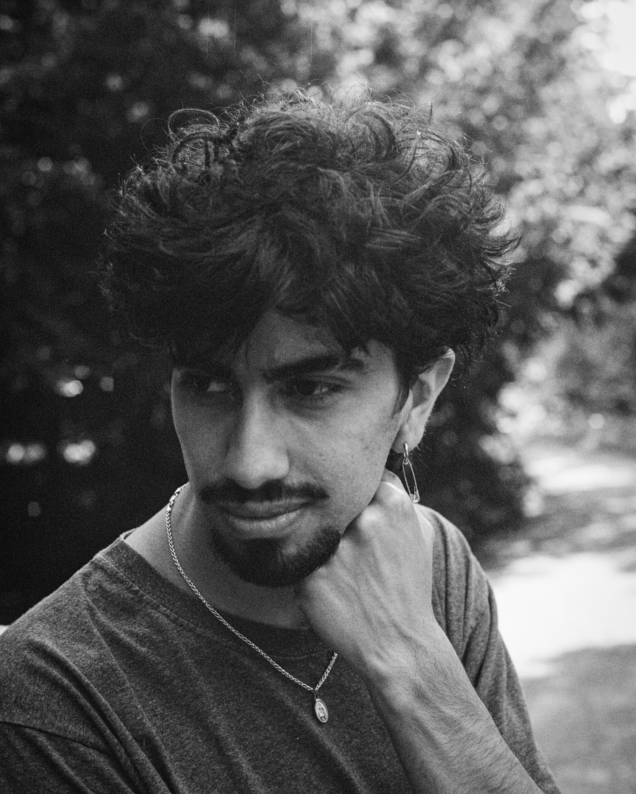

For inquiries
I am an Ecuadorian-Dutch filmmaker and storyteller. My path began in a theater collective in Quito, where I first discovered a love for dramaturgy that later grew into a passion for cinema. After graduating in Audiovisual Media at the University of the Arts Utrecht in 2022 with my short film Ventanas Abiertas, I continue to explore the spaces where fiction and non-fiction meet.
My work often follows outsiders whose lives reflect our shared humanity and existential experience. I am drawn to magical realism and social realism, both very much rooted in the continent where I grew up, South America. Whether inspired by life or imagination, I seek stories that reveal truth in subtle, day-to-day ways.
I am now also delving into more commercial aspects of audiovisual work where artistic is of course, always present. If you’d like to collaborate, brainstorm or just have a drink send me a message and let’s connect!
